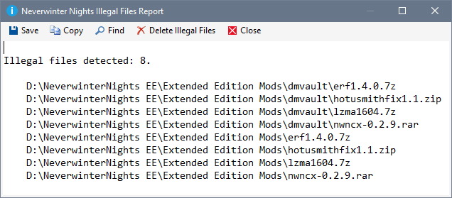

Although the Installer Tool has been designed to ensure the integrity of Profile, Mod and Installed file information is maintained, situations can arise where the information may be compromised. For example, power failures or the Installer Tool is terminated during critical operations as well as cancelling file copies or checksum calculations.
The Tools menu provides access to a range of validation functions to help detect and rectify issues.
The Installer Tool converts any BIK to WBM formatted files using FFmpeg for Enhanced Edition Profiles when you Create Mod Installers, Import Mods or Paste files.
Use Validate Movie Files to detect and convert any BIK formatted files in your Profile.
The conversion process can take some time depending on the number and size of the BIK files that need to be converted.
Validate Profile Data issues a Validate Installed Data followed by a Validate Mods.
The Installer Tool adds any missing Mod folders to the Profile, removes Mod folders that no longer exist, recomputes the file status for all Mods and recomputes the Mod install state for all Mods.
The Neverwinter Nights Installation or User Files folder is processed and any missing files are added to the Installed File list, files that no longer exist are removed from the Installed File list, the checksum values for any added or changed files is computed. Finally, the installed state is recalculated for Mods affected by changes to the Installed File list.
Processes supported directories in your Neverwinter Nights Installation or User Files folder and displays the results in a report. Click Delete Illegal Files to move the illegal files in the list to the Recycle Bin.

|
|
Click the menu illustration to view information about other tools. |